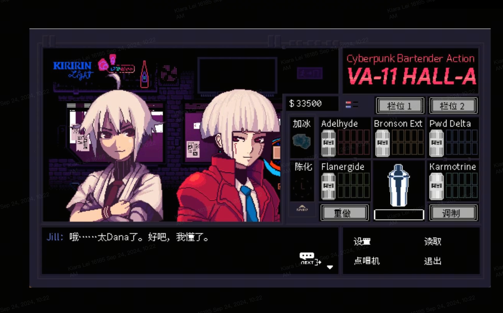
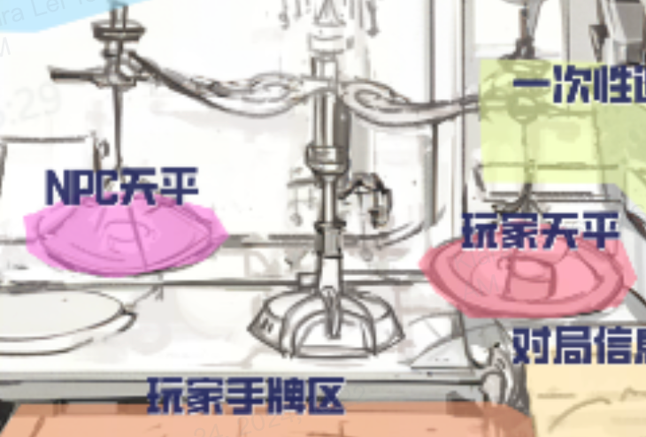

玩法综述
- 基本流程
-
游戏玩法为Roguelike卡牌构筑,参考《小丑牌》
游戏将按照日期进行,完整流程分为3周目。每个周目为期6周(3周赛博朋克时期,3周废土时期),每周7天,其 中5天为交易节点,2天为结算/修整节点。
战斗节点:每周5天为交易(战斗)节点,玩家和一个NPC进行交易玩法
进货节点:玩家按照原价通过现金购买出售商品,会穿插在部那分战斗节点后
检验节点:每周结束时,会检查玩家的总资产(所有商品的价值+现金)是否达到过关目标
难度区分:随着游戏进度普通难度的通关,解锁带有限制条件牛的更高难度,同步开放新系统和高阶玩法
游戏核心:商品既是玩家的资产,也是玩家的手牌,玩家将在在一次次交换中选择留下什么、换出什么、如何交换, 并最终让自己的商品总价值越来越高。
每次和对手交易,都尽量将天平两端配平,如果满足完全平衡,将达成"完美交易",玩家也可以选择试探对方底线 赚取差价。
游戏按日期推进,每周五,玩家将面临资产鉴定,检视目前的为总资产(现金+商品总价值)是否达到指定分数。
多种路径帮助玩家达成数值养成:保留增值商品、达成完美交易、低买高卖、组合商品之间的Build、收集特定商品。 - 战斗流程
-
1.NPC出示想要卖出的所有商品,所有商品都有一个价值
2.玩家挑选要买的和自身要卖的商品置于天平两侧,尽量将价值配平
3.如果天平两侧完全配平,则触发"完美交易",获得+1现金
4.战斗过程中,每买下一件商品,获得+1现金;买得越多,挣得越多
5.战斗过程为物物交换,现金仅用于进货和计算总资产(+商品总价值)
6.玩家在这个过程中获得越来越多的总资产,从而完成每周的数值检验
7.NPC根据性格不同,可能会接受0-2的差价
- 平衡与倾斜
-
平衡值是一条计量尺,初始为0,会在-5到+5之间浮动,和玩家的策略风格互相影响
平衡:
玩家交易时,若天平两侧价值完全相等,则触发"完美交易",获得+1现金奖励,同时平衡值向0运动1个单位 无奸不商:
玩家交易时,若我方天平价值小于敌方天平价值,交易成功后,平衡值-1
乐善好施:
玩家交易时,若我方天平价值大于敌方天平价值,交易成功后,平衡值+1
平衡值会影响故事剧情与结局的走向、卡牌能力的运用、顾客的价格容忍程度等等方方面面。
故事与角色方面:平衡值向负向偏移抵达-5时,会使得商誉变低,顾客对玩家出价的预期会+1;反之,平衡值为较 高正数数值的玩家可能会收到NPC赠予的物品;而处于中央,不断完成完美交易而达到总体平衡,会获得更多可流 动的现金,以及在商店中出现更多的商品,从而导向一个更更加灵活的玩法体验,也适合用来前期过渡。
卡牌方面:有些卡牌会根据玩家的数值有不同的效果,如"读罪券:平衡度为负数时,该物品价格翻倍"、"信用凭证:当一天结束时平衡值刚好为0,使得手中所有商品价值+1"
